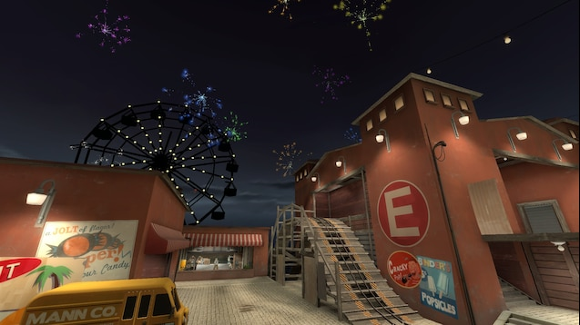
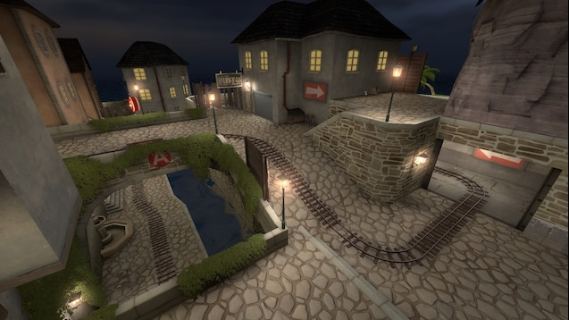
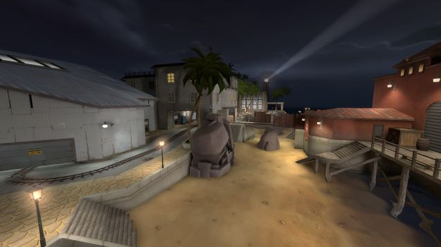

Below you can witness previous works that I have created for my all-time favourite game: Team Fortress 2.
I have been playing the game for 8 years and understand it quite deeply - therefore taking advantage of my knowledge
of the game I always aim to provide the best and most balanced experience whenever designing maps.

Pier 1

Pier 2

Pier 3
Pier Overview
Harvest 1
Harvest 2
Harvest 3
Harvest Overview
Upward 1
Upward 2
Upward 3
Upward Overview
*Disclaimer: These maps were not actually fabricated by me! I simply used these screenshots for assignment purposes, original authors will be referenced in the report
In order to achieve a more modern and balanced map design in present TF2 it is very important to avoid features that are
often seen in older map designs - Chokepoints in vital transversal areas and the abundance of these (e.g. Goldrush in it's
entirety), exaggeratedly wide open spaces without cover, poor spawn and resource (health kits/ammo) placement, tight in-doors
environments, lack of map verticality, large Sniper sightlines and the list goes on.
In the following video a TF2 player gives his thought on all the offically accepted maps found in the game, including the
maps mentioned showcased above. It is recommended to search for the specific parts of the video due to its duration.
In modern TF2, experienced/veteran players seldom prefer to play in maps where a delicate balance of good supply placement
and chokeless areas are in place. This is also beneficial to newer players since they will be accostumed to manage around
maps where good map awareness will be developed in the right manner. In older maps, chokepoints are abused by experienced
players by playing Demoman or Soldier and repeatedly fire explosives at these in order to snag kills on unaware players.
This makes map navigation and team pushes extremely difficult due to a simple contraint given by how the map is layed out.